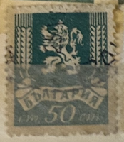
| SOURCE | TITLE| IMAGE MATCH | click to source page |
| Colnect | Stamp: Lion of Bulgaria (Bulgaria(Lion of Bulgaria) Mi:BG 506,Sn:BG 470,Yt:BG 457,Sg:BG 553,AFA:BG 519,Un:BG 506 📮 | 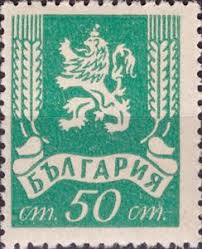 |
| eBay | BULGARIA:1945 SC#O12 Used Lion Rampant T | eBay | 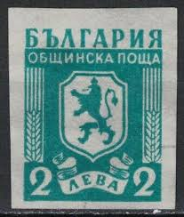 |
| Blogger.com | Stamp Art: Boris Angelushev [ 1st Part (1938/1953) ] | 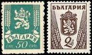 |
| ebid.net | Austria Mi Block 45 BP: Vienna to Brno Express Mail Coach (1750), black print. on eBid United States | 107270852 | 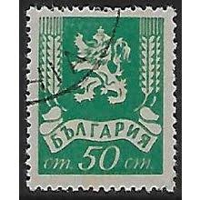 |
| eBay | Individual Bulgarian Stamps for sale | eBay | 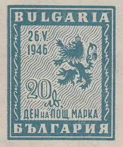 |
| Филателия България | Catalog of Bulgarian Postage Stamps for BC "313" - " Regular. 1936 " - twelve postage stamps. | 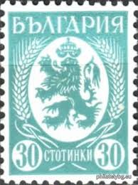 |
| stampphenom.com | Bulgaria 1948 The New Communist Coat of Arms – StampPhenom | 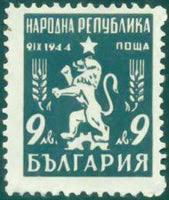 |
| eBay | Parcel Post Bulgarian Stamps for sale | eBay | 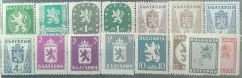 |
| Delcampe | Search in the "1945-59 People's Republic > Other & unclassified" category | Delcampe | 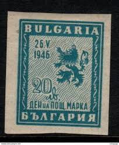 |
| Todocolección | bulgaria, 2 aeba, escudo armas, año 1945, - Buy Antique stamps of Bulgaria on todocoleccion | 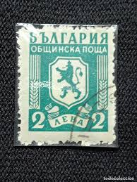 |
| Филателия България | Catalog of Bulgarian Postage Stamps for 1936 year - synthesized | 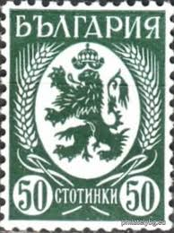 |
| eBay | BULGARIA - MINT MUNICIPAL STAMP. 2L - IMPERFORATED | eBay | 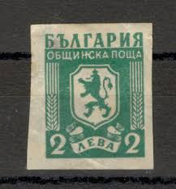 |
| Филателия България | Catalog of Bulgarian Postage Stamps for BC "577" - "Bulgarian-Soviet Friendship - First Regular Congress of the Bulgarian-Soviet Societies." - two postage stamps. | 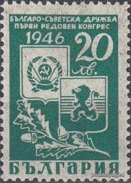 |
| eBay | BULGARIA 480 - Bulgarian Lion "1945 Grey Black" (pb21662) | eBay | 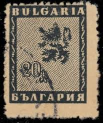 |
| Филателия България | Catalog of Bulgarian Postage Stamps for BC "579" - "Postage Stamp Day - 25.06.1946 - IV Congress of the Union of Stamp Amateur Societies in Bulgaria" - one postage stamp. | 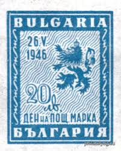 |
| pvoller.net | Bulgaria Postal History 1939-1945 | 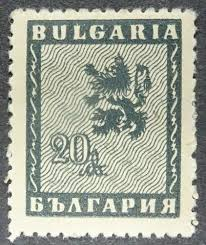 |
| eBay | Bulgaria 1948 New Coat of Arms (D2) | eBay | 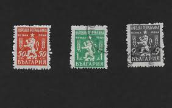 |
| eBay | BULGARIA 1946 DAY OF POSTAGE STAMP IMPERF BLOCK 4 MNH | eBay | 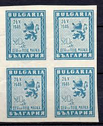 |
| Colnect | Stamp: Lion of Bulgaria (Bulgaria(Definitives) Mi:BG 300,Sn:BG 297,Yt:BG 281,Sg:BG 374b,AFA:BG 306 📮 | 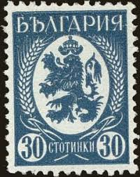 |
| Филателия България | Catalog of Bulgarian Postage Stamps for 1936 year - synthesized | 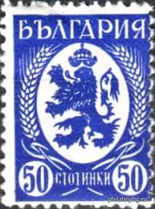 |
| HipStamp | Small Collection of Bulgaria Used | Europe - Bulgaria, Stamp / HipStamp | 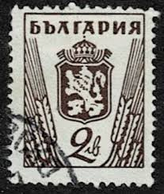 |
| Филателия България | Catalog of Bulgarian Postage Stamps for BC "709" - "Regular - the new state coat of arms." - four postage stamps. | 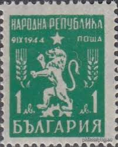 |
| Dreamstime.com | Lion Emblem from a Chrysler New Yorker Editorial Stock Photo - Image of front, chrome: 108343123 | 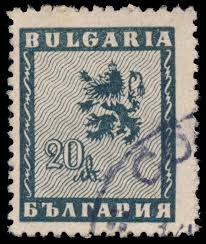 |
| Colnect | Stamp: Coat of arms (Bulgaria(Lion of Bulgaria) Mi:BG 508I,Sn:BG 472,Sg:BG 555,AFA:BG 521,Un:BG 508I 📮 | 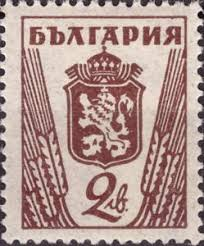 |
| World Stamps Project | Philately of Bulgaria: Varieties of Postage Stamps – World Stamps Project | 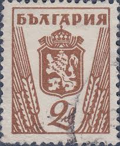 |
| pvoller.net | Bulgaria Postal History 1939-1945 | 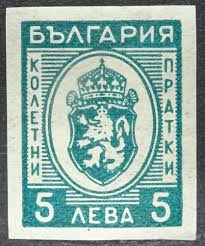 |
| pvoller.net | Bulgaria Postal History 1939-1945 | 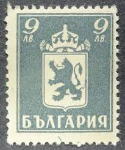 |
| eBay | BULGARIA 472 - Bulgarian Lion Definitive "1945 Type I" (pb18222) | eBay | 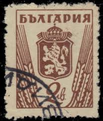 |
| Freestampcatalogue.com | Stamps from Bulgaria - Freestampcatalogue.com - The free online stampcatalogue with over 500.000 stamps listed. | 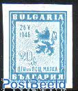 |
| HipStamp | Bulgaria #472 2L Lion | Europe - Bulgaria, General Issue Stamp / HipStamp | 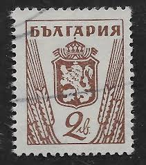 |
| Филателия България | Catalog of Bulgarian Postage Stamps for BC "709" - "Regular - the new state coat of arms." - four postage stamps. | 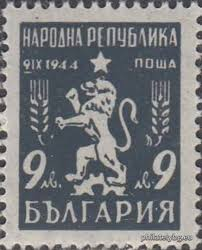 |
| Филателия България | Catalog of Bulgarian Postage Stamps for BC "595" - "Bulgarian-Soviet Friendship - I Regular Congress of the Bulgarian-Soviet Societies (II edition, with changed colors)" - two postage stamps. | 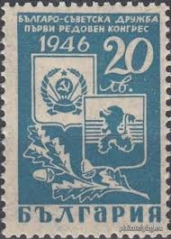 |
| sellosmundo.com | Stamp: Conmemorativo dìa de la industria. Exposición de la Industria Argentina. 5 centavos of Argentina America* | 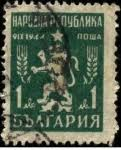 |
| eBay | BULGARIA 477 - Bulgarian Lion Definitive "1945 Printing" (pf96928) | eBay | 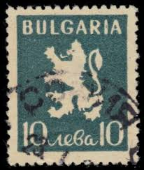 |
| eBay UK | BULGARIA 1945 - LION OF BULGARIA - COAT OF ARMS - FINE USED 4lev STAMP | eBay UK | 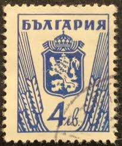 |
| eBay UK | Bulgaria 1945 Arms 30st Mint Hung SG 552 VGC | eBay UK | 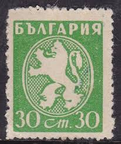 |
| Delcampe | Ricerca nella categoria "Francobolli di servizio" | Delcampe | 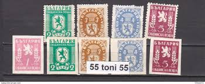 |
| HipStamp | DYNAMITE Stamps: Bulgaria Scott #477 – USED | Europe - Bulgaria, General Issue Stamp / HipStamp | 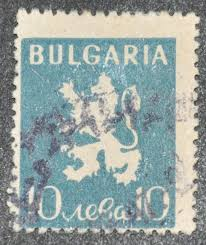 |
| eBay | BULGARIA 472a - Bulgarian Lion Definitive "1945 Type II" (pb21690) | eBay | 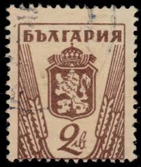 |
| Филателия България | Catalog of Bulgarian Postage Stamps for 1925 year. | 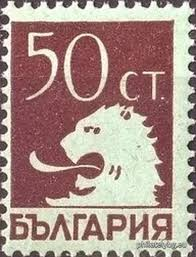 |
| Free stamp catalogue | Stamps from Bulgaria - Freestampcatalogue.com - The free online stampcatalogue with over 500.000 stamps listed. | 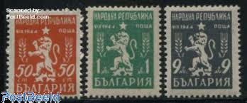 |
| Alamy | Illustration postage stamp bulgaria hi-res stock photography and images - Page 2 - Alamy | 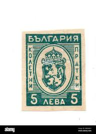 |
| Delcampe | 1945-59 People's Republic - 106K470 / Bulgaria 1948 Michel Nr. 676-678 Used ( o ) New Coat of Arms Animals Lion , Bulgarie Bulgarien | 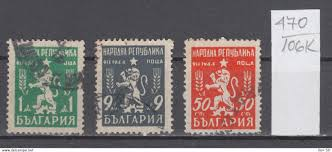 |
| eBay | Foreign Stamp 30c Used - #7348 | eBay | 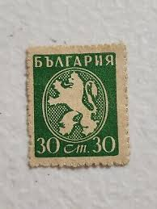 |
| Stamp Auction | Cherrystone Auctions Sale - 0620 Page 12 | 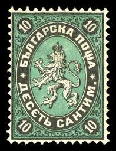 |
| HipStamp | Bulgaria, 1944, Parcel Post, Mi#22, imperf, 3L, used | Europe - Bulgaria, Stamp / HipStamp | 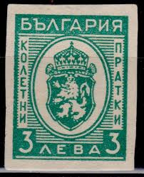 |
| HipStamp | BULGARIA Scott 477 Used | Europe - Bulgaria, General Issue Stamp / HipStamp | 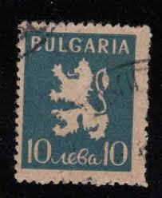 |
| eBay | Bulgaria 1882 Unique VARIETY, ERROR, Big Lion Damaged frame Used VF | eBay | 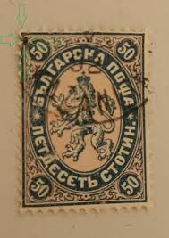 |
| stampphenom.com | Bulgaria 1944 Parcel Post Stamps - Coat of Arms – StampPhenom | 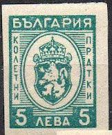 |
| eBay | Bulgaria 1950 New Coat of Arms 50 (X2) | eBay | |
| eBay | Bulgaria 358-359, hinged. 1st postage stamp centenary, 1940. 1st stamp. | eBay | |
| eBay | Bulgaria Stamp Yvert #2 NNG New Not Gum C/V €1200=$1403 EXCELLENT UNIQUE !!! | eBay | |
| eBay | Bulgaria Stamps 1946 Mi# 528 DAY OF THE POSTAGE Block of 4 MNH** OG VF | eBay | |
| HipStamp | BULGARIA Scott Q23 parcel post stamp Used | Europe - Bulgaria, Parcel Post Stamp / HipStamp | |
| Филателия България | Catalog of Bulgarian Postage Stamps for BC "194" - " Regular. " - fifteen postage stamps. | |
| Colnect | Bulgaria : Stamps [Year: 1946] [1/8] : Colnect 📮 | |
| Shutterstock | Coat Arms Bulgaria: Over 402 Royalty-Free Licensable Stock Photos | Shutterstock | |
| eBay | BULGARIA 475 - Bulgarian Lion Definitive "Red Violet" (pf56248) | eBay | |
| bwdavis.us | WW Stamps Bulgaria - Collectibles of Bwdavis |